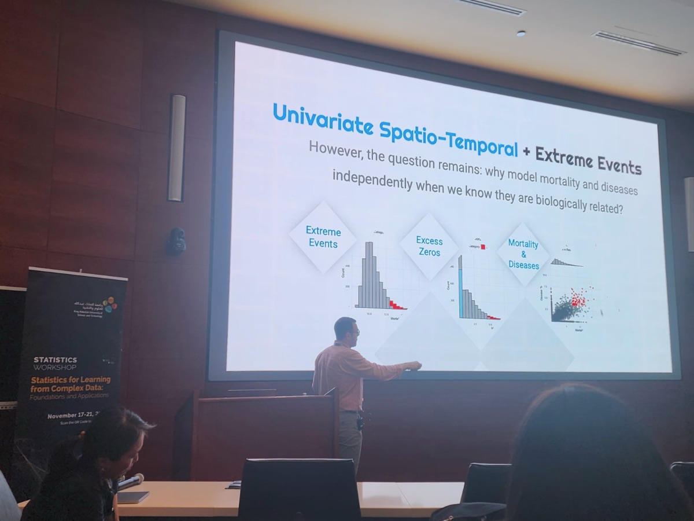
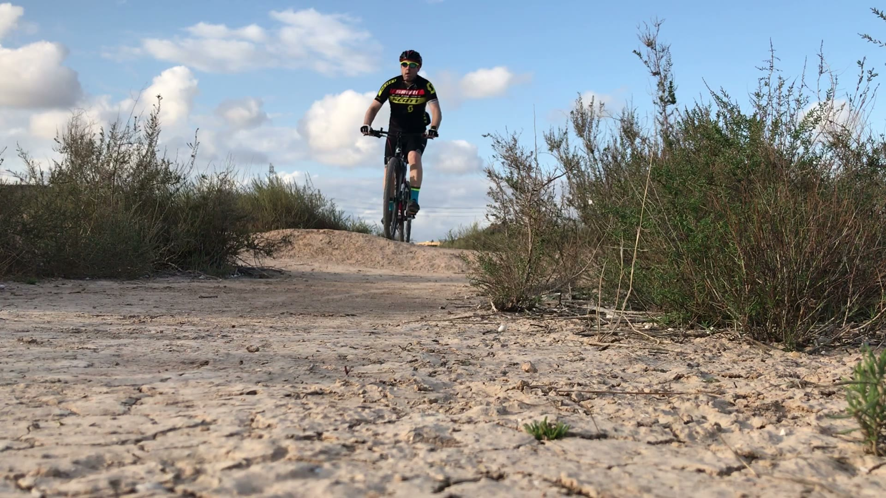
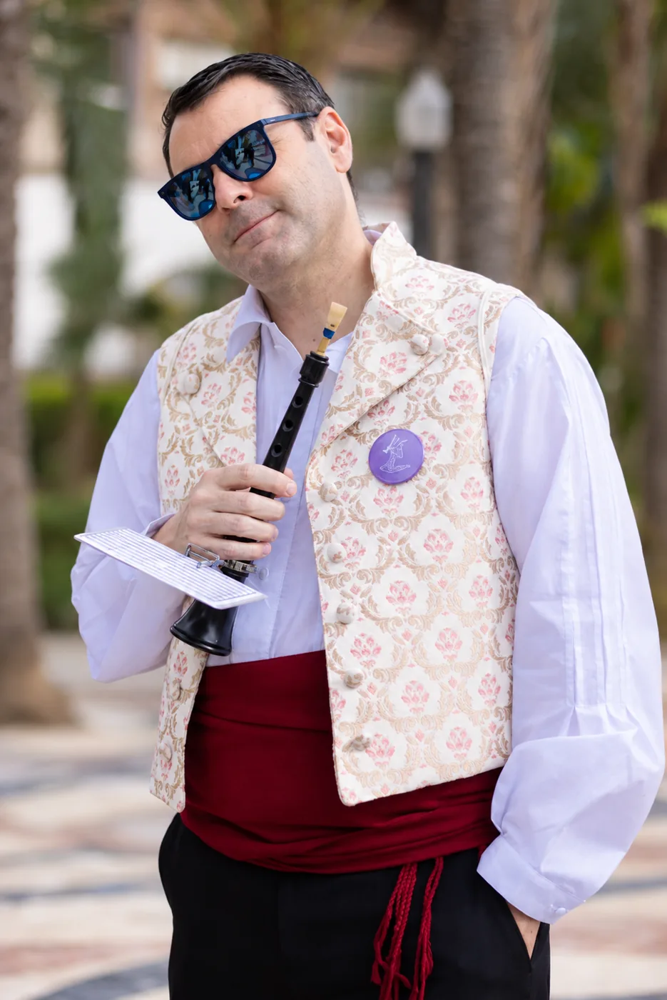
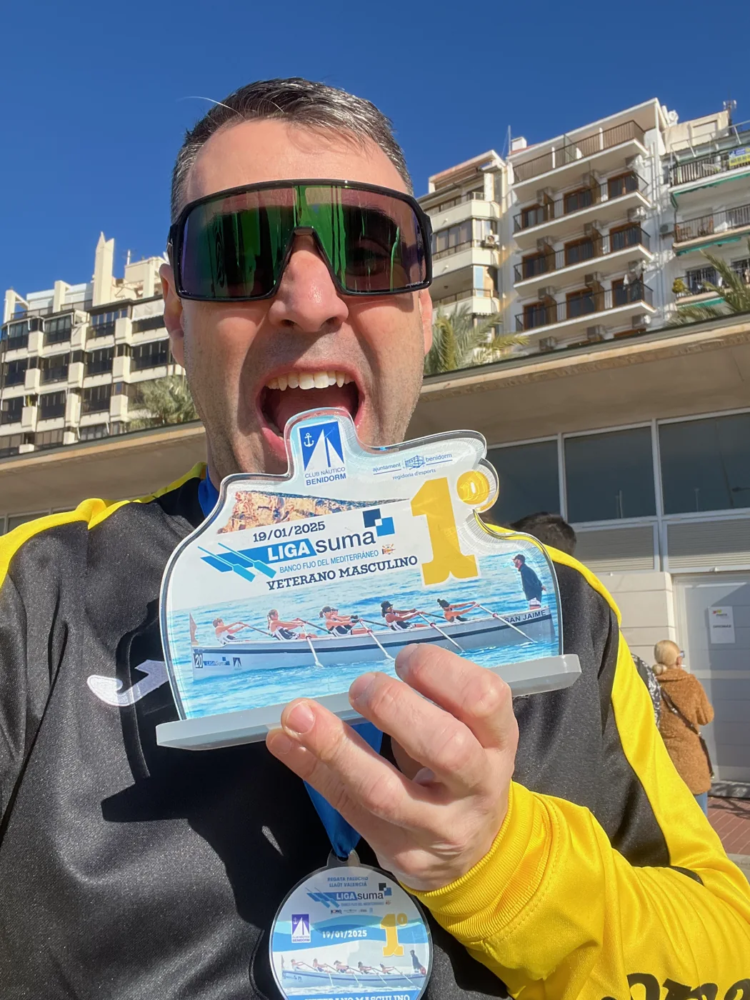
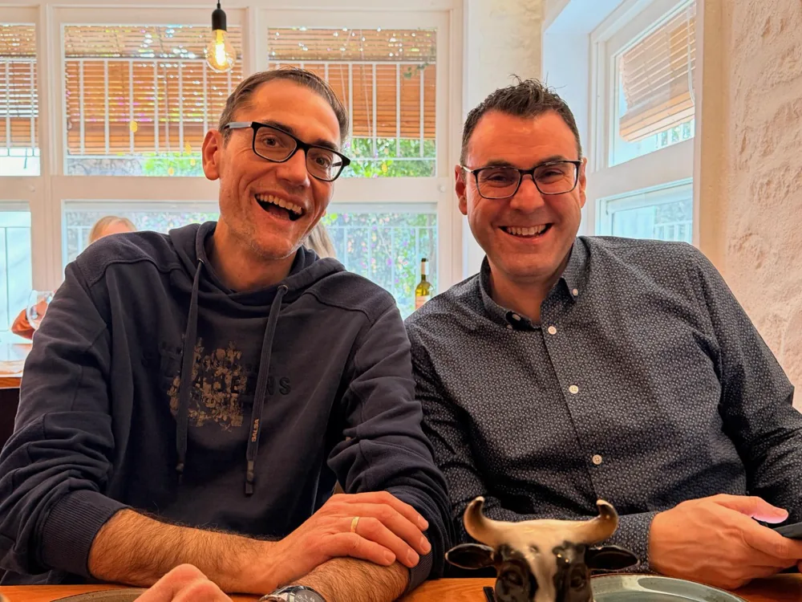
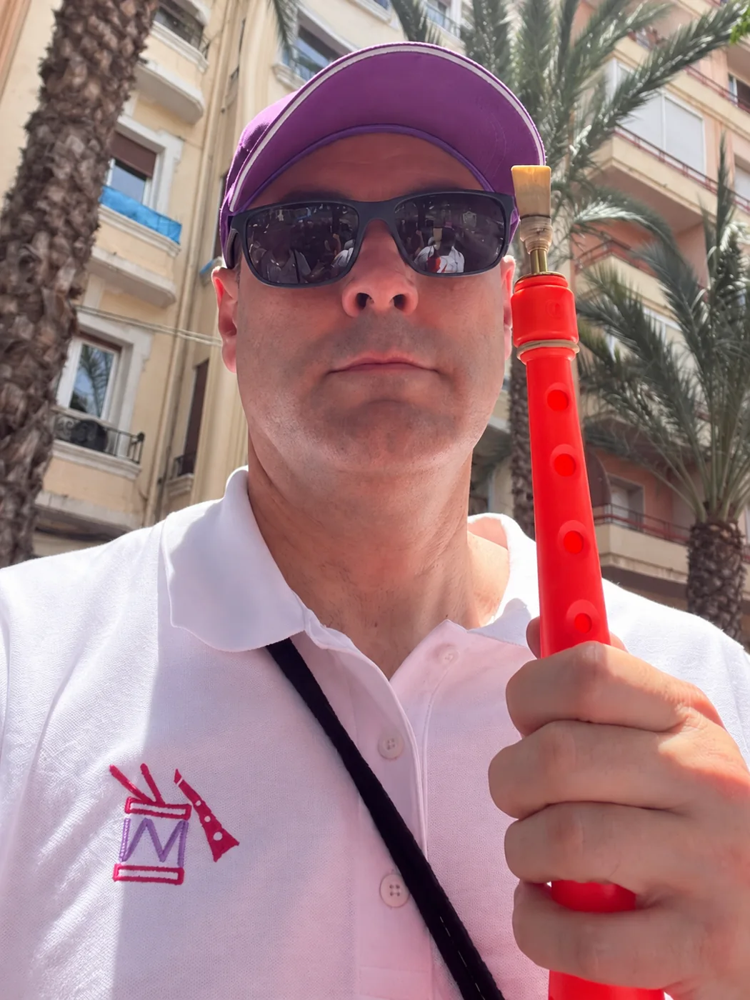

Generative AI and clinical evidence
Generative AI for clinical recommendations: a proof-of-concept study using a closed evidence corpus.
Xavier Barber · Data science with judgement
I connect research, artificial intelligence and domain knowledge to help businesses, public institutions and research teams make better decisions.
Full Professor at UMH · Deputy Director of i-MInD · Director of the UMH–FISABIO Joint Research Unit
01 / PROFILE
A useful solution starts with understanding the question.
I am a Full Professor of Statistics and Operations Research at Universidad Miguel Hernández de Elche, Deputy Director of i-MInD and Director of the UMH–FISABIO Joint Research Unit on Statistical Methods in Health Sciences.
My work combines machine learning, Bayesian modelling, spatial analysis and efficiency assessment. I collaborate with specialists in health, the environment, industry and economics to turn data into evidence and useful tools.
Career and scientific community
02 / SELECTED RESEARCH
Machine learning, uncertainty and models that connect disciplines. Selected work with links to the original publications.
Generative AI for clinical recommendations: a proof-of-concept study using a closed evidence corpus.
Adapting Random Forest to estimate production technologies and measure efficiency in education.
International Transactions in Operational Research · 2025
Machine learning to model species distributions on a global scale.
Machine learning applied to global scale species distribution models
Scientific Reports · 2025
A machine-learning calculator to predict musculoskeletal injuries in surgeons.
A calculator for musculoskeletal injuries prediction in surgeons: a machine learning approach
Surgical Endoscopy · 2024
A review of Bayesian networks for disease diagnosis and prognosis.
Bayesian networks for the diagnosis and prognosis of diseases: a scoping review
Machine Learning and Knowledge Extraction · 2024
Open-source R software for fitting Efficiency Analysis Trees.
eat: an R Package for fitting Efficiency Analysis Trees
The R Journal · 2022
03 / PROJECTS AND KNOWLEDGE TRANSFER
Experience with specific problems across different sectors. These examples illustrate areas of work, rather than an exhaustive list of collaborations.
AI · PROTECTING PEOPLE
01Development and validation of predictive models for repeat-offence risk assessment within the ALTEA project. Statistics and AI to support police risk assessment tools.
Related workAPPLIED RESEARCH
02Selected success stories include predicting musculoskeletal risk in surgeons and analysing acceptance of remote consultations. Examples from a wider track record in clinical studies, treatment evaluation and predictive tools.
Related workRISK AND ADAPTATION
03Thermal risk in aquaculture, species distributions and environmental data integration. Maps and models to inform management and adaptation.
Related workRESOURCES AND PROCESSES
04Compost Calculator, sludge characterisation, waste valorisation, irrigation and soil zoning. Analysis to evaluate processes and resource-use options.
Related workSUSTAINABLE MANAGEMENT
05Turf management, fertilisation and remote sensing. Evidence to inform maintenance and resource use.
Related workQUALITY AND DEVELOPMENT
06Experimental design, formulation, preservation and consumer preferences. Comparing products, processes and coproduct ingredients.
Related work04 / HUMAN-CENTRED AI
Useful AI must pay attention both to model quality and to the people it affects.
My experience in risk assessment, health research and large-scale citizen surveys connects methods with social needs. I see AI as a tool to support informed decisions, with human oversight and attention to its limitations.
Explain what a model answers, which data it uses and what it assumes.
Make uncertainty visible and assess where a tool works.
Consider bias and the consequences of using the results.
Support professional judgement and the responsibility of decision-makers.
05 / TRAINING
Specialised training to help teams understand tools, interpret results and apply them with judgement in their work.
Generative AI, document analysis, security and practical applications for more efficient public administration.
Data science and machine learning to analyse information and evaluate predictive models.
Experimental design, methodology and statistical analysis, including training in animal experimentation.
Teaching innovation, digital skills and contributions to postgraduate and digital health training.
University teaching since 2005, specialised training and Teaching Talent recognition. Excellent evaluations in DOCENTIA-UMH.
Discuss training for your team06 / BEYOND THE UNIVERSITY
I am from Dénia. Cycling and playing the dolçaina are two ways to switch off, enjoy myself and spend time with others.





Time outdoors, trails and cycling. A chance to change pace and enjoy the surroundings.
Playing the dolçaina, a traditional Valencian wind instrument, connects me with Valencian music and culture. An interest rooted in coming together, tradition and shared learning.
Rowing is also part of my story, although I am currently taking a break from it.
07 / CONTACT
Tell me what you need to decide, what data you have or what training your team needs. Let's start with a good question.
Universidad Miguel Hernández de Elche
Dénia / Elche, Spain